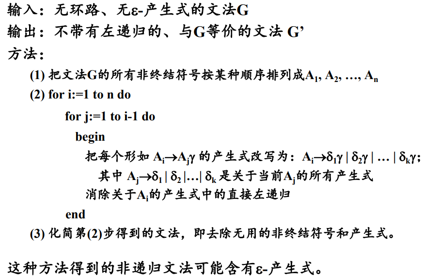
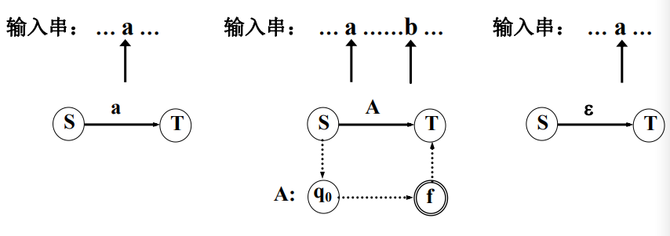
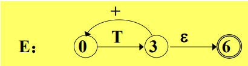
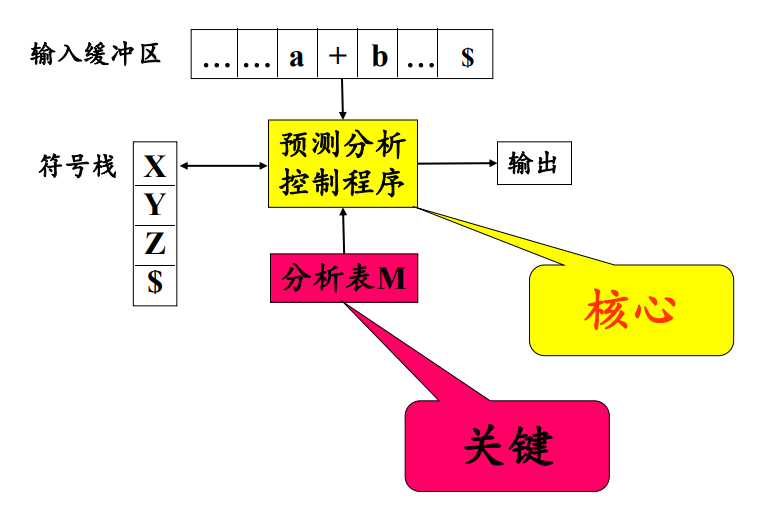
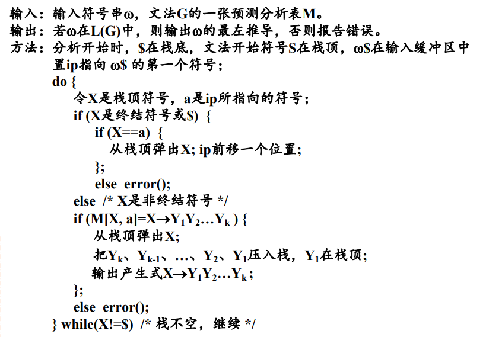
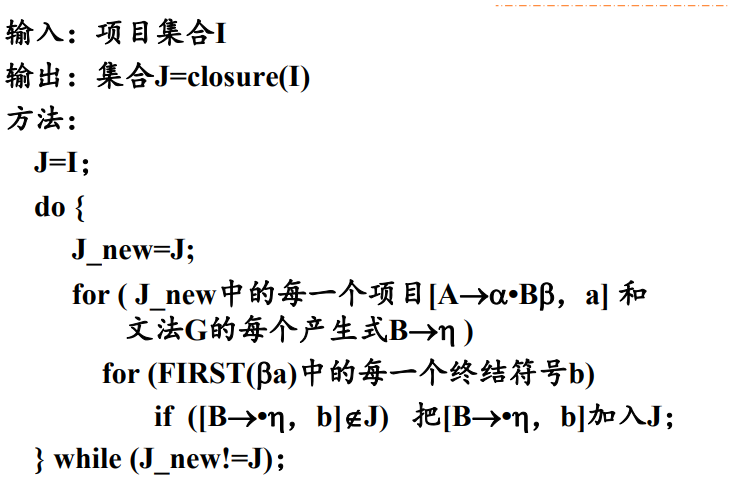

语法分析
语法分析简介
语法分析是编译程序的核心规则，按照源语言的语法规则进行分析，输出分析树并进行语法分析阶段的错误处理。
- 从源程序记号序列中识别出各类的语法成分
- 进行语法检查
鉴于分析树的树状数据结构，我们有两种分析方法：
- 自顶向下的分析方法
- 自底向上的分析方法
语法错误的处理
错误处理的目标是：
- 报告错误的位置和性质
- 迅速从错误中恢复
- 不应该明显影响对于正确程序的分析速度
错误处理有如下的策略：
-
紧急恢复：一旦发现错误，分析程序每次抛弃一个输入记号，直到扫描到的记号属于某个指定的同步记号集合。
同步记号集合往往是定界符，如语句结束符（分号），语句起始符，块结束符（END）。
-
短语级恢复
-
出错产生式
-
全局纠正
自顶向下的分析防范
递归下降分析
从文法的开发符号出发，进行推导，试图推导出要分析的输入串的过程。对于给定的输入符号串，从对应于文法开始符号的根节点出来，建立分析树。整个过程是一个试探的过程，反复使用不同的产生式谋求匹配输入符号串的过程。
例：按照如下的文法分析abbcde
首先尝试，对于分别尝试两种生成情况递归生成中间两个，依次类推递归尝试所有的生成式。
使用递归下降分析可以得到一个最左推导序列。
关于推导的补充知识：
现在有 其中 表示一步推导，其中称左边直接推导出右边，也可以说右边是左边的直接推导，或者右边直接归约到左边。
关于短语的补充知识：
假定 是文法的一个句型，如果存在： 就称 是句型关于非终结符号的短语。
如果存在： 那么就称 是句型关于非终结符号的直接短语。
一个句型的最左直接短语称为该局性的句柄。
因此对于输入串的扫描是自左至右进行的，只有使用最左推导，才能保证按照扫描的顺序匹配输入串。
但是递归下降分析方法存在缺陷：
- 左递归的文法，可能导致分析过程陷入死循环
- 回溯
- 工作的重复
- 效率低
递归调用预测分析
一个确定的，不带回溯的递归下降分析方法。
-
如何克服回溯？
根据所面临的输入符号准确的指派一个候选式去执行任务。
-
那么如何准确指派，首先对文法存在要求。
- 不含有左递归
- 其中
解释一下的规定： 也就是非终结符能够推出的一个终结符。
预测分析程序的构造
-
构造预测分析程序转换图
每个非终结符号都有一张图，边的标记可以使终结符号和非终结符号。
对于非终结符号的转移表示对的过程调用。
对于终结符号的转移，表示下一个输入符号应该是
为了从文法构造一个转换图，我们需要首先对文法进行改写：
- 重写文法
- 消除左递归
- 提取左公因子
消除左递归：
首先考虑简单情况。如果存在产生式： 可以改写为： 
提取左公因子：
如果存在产生式： 那么提取左公因子，有：
然后对于每个非终结符号：创建一个初始状态和一个终结状态，对于每一个产生式创建一条从初态到终态的路径。
-
转换图的工作过程
从文法开始符号所对应的转换图的开始状态开始分析。
经过若干动作之后，处于状态，指针指向符号:

-
转换图的化简
反复代入化简。

-
预测分析程序的实现

void procE() { procT(); if (input == '+') { pointer.forward(); procE(); } }
非递归预测分析
使用一张分析表和一个栈联合控制，输入对输入符号的自顶向下分析。
预测分析程序的模型如图所示：

- 输入缓冲区：存储被分析的输入符号串
- 符号栈：存放文法符号
- 分析表：存储产生式，根据给定的栈顶和当前指针定位产生式
- 输出流
说明，
$表示起始和终结符号
预测分析控制程序
根据栈顶符号X和当前输入符号a，分析动作存在四种可能：
X和a都是终结符号，停止分析X=a但是不为终结符号，弹栈并向前移动输入指针X在分析表中但是a不是，调用错误处理程序报告错误并进行错误恢复- 访问分析表获得产生式，先弹栈，并将生成式的右部符号串按反序压入栈中
可以写出伪代码：

预测分析表的构造
-
首先进行文法的改写，同递归调用分析预测的要求和步骤一致。
-
FIRST集合及其构造FIRST集合的定义为：对于任何文法符号串，是可以推导出的开头终结符号集合。 特别需要注意的是，如果可以推出空串，那么。
构造
FIRST集合：- 如果, 那么
- 如果， 那么针对所有的生成式，将加入
- 如果 ,加入空串
- 如果存在 ，加入中所有非空的元素
重复该过程，知道所有的集合不再变化为止。
-
FOLLOW集合及其构造FOLLOW集合的定义为：假定为文法的开始符号，对于文法中的任何非终结符，集合式在所有句型中紧跟之后出现的终结符号或者组成的集合。 特别的，如果，那么规定，注意集合中不能存在空串。
构造
FOLLOW集合：- 对于文法开始符号，将放入中
- 如果存在产生式，那么将中的所有非空元素加入中
- 如果，或者且存在，那么将中的所有元素加入到中
重复此过程，直到所有集合不再变化为止。
-
预测分析表的构造

LL(1文法：如果一个文法的预测分析表不含有多重定义的表项，则称该文法为LL(1)文法。
LL(1)文法的判定方法：
当且仅当对于该文法的每一个产生式 ，都有：
- 如果, 那么
或者根据分析表来判断。
自底向上的分析方法
从左到右进行对输入串的扫描，自底向上的进行分析树的构造。分析的过程如下：
- 从输入符号串开始分析
- 查找当前句型的可归约串
- 使用规则，把它归约成相对应的非终结符号
- 重复
优先分析法
优先分析法分成简单优先分析法和算符优先分析法。
-
简单优先分析法 按照文法符号之间的优先关系确定当前句型的可归约串。但是存在分析效率低且只适用于简单优先文法的问题。
简单优先文法： 任何两个文法符号之间最多存在一种优先关系。 不存在具有相同右部的产生式。
-
算符优先分析法 只考虑中介符号之间的优先关系。分析速度快，但是只适用于算符优先文法。
算符文法： 没有形如的产生 式的文法。
算符优先文法：算符文法，且不含有生成式。任何两个构成有序对的终结符号之间最多有、、三种优先关系中的一种成立。
可归约串是句型的最左素短语。素短语是句型的一个短语，至少含有一个中介符号，并且除它自身之外不存在其他更小的素短语。最左素短语就是处在句型最左边的素短语。
移进——归约分析方法
该方法需要设置一个符号栈存放文法符号。
-
将输入符号一个个地移进栈中；
-
当栈顶的符号串形成某个产生式的一个候选式时，在一定条件下，把该符号串替换为该产生式的左部符号；
-
重复2，直到栈顶符号不再是可归约串为止；
-
重复1~3，直到最终归约出开始符号。
规范归约
假设是文法的一个句子，存在右句型序列是的一个规范归约，如果序列满足：
- 对于任何，是经过把的句柄替换成相应产生式的左部符号而得到的
LR分析方法
首先介绍LR(k)的含义：L表示自左向右扫描输入字符串，R表示为输入符号串构造一个最右推导的逆过程，k表示为作出分析决定而向前看的输入符号个数。
LR分析方法的基本思想：
- 历史信息：记住已经移进和归约出的整个符号串
- 预测信息：根据所用的产生式推测未来可能遇到的输入符号
根据历史信息和预测信息，以及现实的输入符号确定栈顶的符号串是否构成相对于某一产生式的句柄。
LR分析程序的模型和工作过程
- 栈
- 控制程序
- 分析表
- 输入
- 输出
分析表
LR分析控制程序工作的依据，有着两张表：
- 状态经过转移的后继状态
- 状态遇到输入符号应该采取的分析动作。
分析动作可以有四种：
shift S：将当前输入符号和状态推进栈中，向前扫描指针前移，其中reduce by：生成式为，如果的长度为，则从栈顶向下弹出项，使得成为栈顶状态，然后把文法符号以及状态推进栈中，其中accept：宣布分析成功error：调用出错处理程序，进行错误恢复
分析控制程序

活前缀：一个规范句型的一个前缀，如果不含句柄之后的任何符号，则称它为该句型的一个活前缀。
SLR分析表的构造
为给定的文法构造一个识别它所有活前缀的DFA，根据这个DFA构造文法的分析表。
LR(0)项目：右部某个位置上标有圆点的产生式成为文法G的一个LR(0)项目。例如生成式对应有4个LR(0)项目：
各种LR(0)项目可以分为：
- 归约项目：远点在产生式最右端的项目
- 接受项目：对文法开始符号的归约项目
- 待约项目：圆点后第一个符号为非终结符号的项目
- 移进项目：圆点后第一个符号为终结符浩的项目
下面再定义LR(0)有效项目：
对于项目，活前缀，如果存在 则称该项目对于该前缀是有效的。
文法G·的某个活前缀的所有LR(0)有效项目组成的集合称为该活前缀的LR(0)有效项目集。
文法G的所有LR(0)有效项目集组成的集合称为G的LR(0)项目集规范族。
SLR分析方法的一个特征：如果文法的有效项目集中有冲突动作，多数冲突可以通过考查有关非终结符号的FOLLOW集合可以解决。
例如对于项目集 同时存在移进-归约冲突和归约-归约冲突。
通过查看FOLLOW(A)和FOLLOW(B)解决：如果
决策：
- 当，将入栈
- 当时，使用进行归约
- 当时，使用进行归约
LR(1)分析表的构造
首先给出LR(K)项目：
- 是一个
LR(0)项目 - 是向前看符号串
注意，向前看符号串只对归约项目起作用。
LR(k)项目意味着当它所属的项目集状态在栈顶且后续的输入符号序列和向前看符号串匹配的时候才允许归约。
定义：LR(1)有效项目
对于一个LR(1)项目，如果存在一个规范推导：
其中的第一个符号为，则该项目对于活前缀是有效的
推广：
如果项目对于是有效的，并且由产生式，则对于任何的 ，项目 对于该活前缀也是有效的。
利用定义和推广获得项目集的闭包：

构造LR(1)分析表

LALR(1)分析表的构造
首先给出两个描述LR(1)项目集特征的定义：
- 同心集：如果两个
LR(1)项目集在去掉搜索符号之后是相同的，则称这两个项目具有相同的心。 - 项目集的核：除了初态项目集之后，一个项目集的核是由该项目集中那些圆点不在最左边的项目组成。
构造LALR(1)分析表的基本思想：
- 合并项目集规范族中的同心集，减少分析表的状态数
- 用核代替项目集，减少项目集所需的存储空间
注意，同心集的合并可能会导致新的归约-归约冲突。
因此，构造LALR(1)分析表的过程如下：
-
首先构造
LR(1)项目集的规范族 -
检查
LR(1)项目集规范族如果存在冲突，不是
LR(1)文法。不存在冲突。
-
检查是否存在同心集，合并同心集
-
检查合并之后的项目集是否存在冲突
如果存在冲突，不是
LALR(1)文法不存在冲突。
-
根据
LALR(1)项目集规范族构造分析表
文法的分类：

LR分析方法对于二义文法的应用
定理：任何二义文法绝不是LR文法，因而也不是SLR或者LALR文法。
但是在程序设计语言中的某些结构使用二义性文法来描述比较直观，使用方便。可以定义一些规则来解决文法的二义性，例如：
-
算数表达式
使用运算符优先级或者运算结合规则
-
if语句else的最近最后匹配规则
LR分析的错误处理与恢复
当分析文法发生错误时，可以采用如下的恢复策略：从栈顶开始弹栈，可能会弹出若干个状态直到出现状态S。其中状态S满足以下某一个条件：
-
状态
S有相对于当前输入符号的转移移进，分析继续
-
goto表中有S相对于某非终结符号A的后继跳过若干个输入符号，直到出现符号
a，，然后将状态goto[S, A]压入栈顶，分析继续